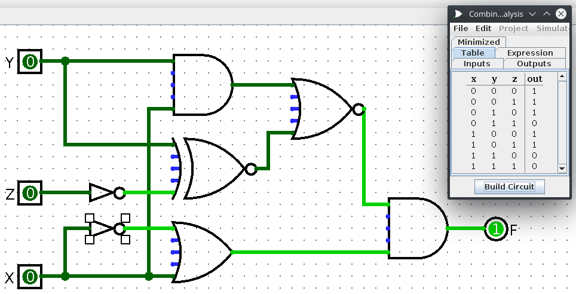
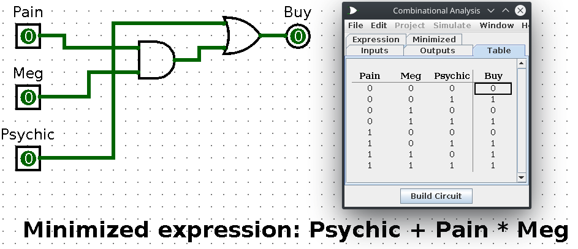
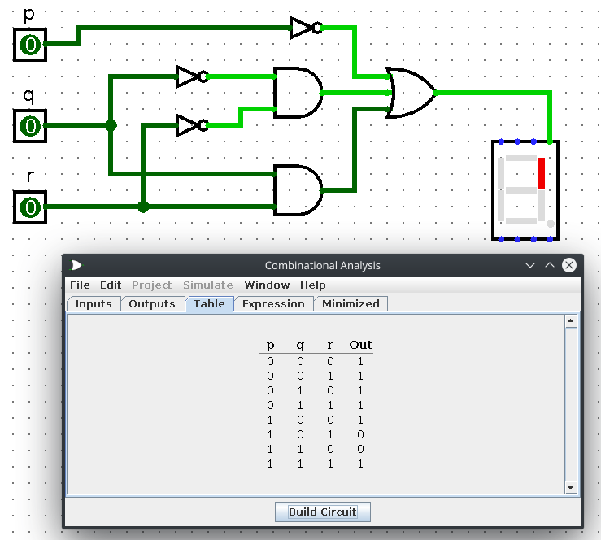

Created Sunday 22 March 2020
Keywords
bit - the most basic unit of information in a computer
byte - is a group of eight bits.
word - a contiguous group of bytes
nibble - a group of four bits
hextet - a group of four binary digits
Chapter 2A Labwork
Exercise 2 - Convert all decimal numbers to binary. Show work.
Remember, 110112 = 2510.
To check your answers in this section, this website is quite useful.
Radix conversion can be done via either the subtraction or division remainder method.
The division remainder method I believe is simpler and faster. Between the two, I recommend using that one.
The following follow shows how to convert via subtraction on the left side and via division remainder on the right:

Note, the final answer is 45810 = 1110010102. The first 1 in the subtraction answer is somewhat cut off in the photo.
Answers:
a) 45810 = 1110010102
b) 67710 = 10101001012
c) 151810 = 101111011102
d) 44012 = 10001001100012
Exercise 8
Same as exercise 2 but now with decimal numbers.
Unlike integer values, fractions do not necessarily have exact representations under all radices.
For matching values that come after the decimal, we can make use of the following:
- 2-1 = (1/2)1 = 1/2 = 0.5
- 2-2 = (1/2)2 = 1/4 = 0.25
- 2-3 = (1/2)3 = 1/8 = 0.125
- 2-4 = (1/2)4 = 1/16 = 0.0625
For conversion, we can either use the subtraction method or the easy multiplication method.
The subtraction method is similar to what we did in exercise 2. Instead of subctracting positive powers of the target radix, we subtract negative powers of the radix.

On the left, we convert 25.8437510 to 11001.110112 via only subtraction. On the right side, we find the values after the decimal via multiplication instead of subtraction.
For the easy multiplication method, simply keep going until we reach 0 or to however decimal places you want (for exercise 8, we stop after 6 even if we can keep going).
For the whole number portion of the radix conversion, use whatever you want. It doesn't have to be subtraction! You could use division instead for the value before the decimal point.
Answers:
a) 25.8437510 = 11001.110112
b) 57.5510 = 111001.1000112 (keeps going but stopping 6 places to the right of the binary point)
c) 80.9062510 = 1010000.111012
d) 327.7812510 = 101000111.110012
Exercise 10
Convert the given binary fractions to decimal. It's actually very simple. Observe the following:
| 16 | 8 | 4 | 2 | 1 | 0.5 | 0.25 | 0.125 | 0.0625 |
|---|---|---|---|---|---|---|---|---|
| 1 | 0 | 1 | 1 | 1 | 1 | 1 | 0 | 1 |
All you have to do is add up all of the corresponding base-10 numbers with the 'on' bits of the binary fraction.
So then, 10111.11012 = 23.812510
Answers:
a) 10111.11012 = 23.812510
b) 100011.100112 = 35.5937510
c) 1010011.100012 = 83.5312510
d) 11000010.1112 = 194.87510
Exercise 15
We only have to do one of the two hex words from the problem.
Convert either the hexadecimal number DEAD16 or BEEF16 to binary.
To begin, we use hexadecimal because binary can be quite unruly to read so hexadecimal cuts down on the number of digits we need to represent the same number. The same could be said about base-10 though so why hexadecimal? The reason is because it's easy to convert between base-2 and base-16 for 16 = 24.
Also, counting from 0 to 15 in hexadecimal goes like this: 0, 1, 2, 3, 4, 5, 6, 7, 8, 9, A, B, C, D, E , F
Anyways, to convert from binary to hexadecimal, we only need to group the binary digits into groups of four!
So then,
00112 = 316
01012 = 516
00012 = 116
10112 = B16
Answers:
DEAD16 = 1101 1110 1010 11012
BEEF16 = 1011 1110 1110 11112
Exercise 18
This question is a little extra. We are given four base-10 values and have to represent them in 8-bit signed magnitude, one's complement, two's complement, and excess-127 representations. Let's begin by discussing how to do each one.
Firstly, why do we need these representations in the first place? Because we need a way to represent signed binary integers (aka, positive and negative binary integers).
8-bit signed magnitude
For this representation, we have 8 bits. The left most bit is the sign bit. If 0, then we have a positive number. If 1, then it's negative. The rest of the 7 bits are the absolute value of the number in question.
000000112 = +3
100000112 = -3
This sounds pretty great so why do we need the other representations? Well, it might be easy for us humans but no so for computers. It requires complicated computer hardware. Also, we can represent 0 as positive or negative! That isn't very good... As such, we have the complement systems.
One's complement
In complement systems, negative values are represented by some difference between a number and its base.
As with 8-bit signed magnitude, negative values are indicated by a 1 in the high order bit in one's complement.
000000112 = +3
111111002 = -3
Complement systems are great because we no longer need to subtract! The difference between two values is found by just adding.
Two's complement
One's comlement may be simpler to implement than signed magnitude but it still has the disadvantage of having two different representations for zero: positive and negative. Two's complement solves this issue!
If the number is positive, just convert it to binary and you're done! Otherwise, if the number is negative, find the one's complement of the number then add 1.
000000112 = +3
111111012 = -3 (notice that -3 in one's complement is just this but subtract 1)
Excess-M Representation (also known as offset binary representation)
So then, just what in the world is excess-127 representation? Well, excess-m representation is another way for unsigned binary values to represent signed integers. It is intuitive for a binary string with all 0s represents the smallest number, whereas the binary string with all 1s represent the largest value. An unsigned binary integer M (called the bias) represents the value 0, whereas all zeroes in the bit pattern represent the integer -M.
The integer is interpreted as positive or negative depending on where it falls in the range.
The unsigned binary value for a signed integer using excess-M representation is determined simply by adding M to that integer.
For example, assuming excess-7 representation, the integer 010 is represented as 0 + 7 = 710 = 01112
310 is represented as 3 + 7 = 1010 = 10102
-710 is represented as -7 + 7 = 010 = 00002
What if we want to find the decimal value of the exess-7 binary number 11112? Subtract 7 from 11112 = 1510 and 15 - 7 = 8 thus 11112 in excess-7 is +810.
Answers:
a) 97
Signed Magnitude: 01100001
One's Complement: 01100001
Two's Complement: 01100001
Excess-127: 97 + 127 = 22410 = 111000002
b) -97
Signed Magnitude: 11100001
One's Complement: 10011110
Two's Complement: 10011111
Excess-127: -97 + 127 = 3010 = 000111102
c) 44
Signed Magnitude: 00101100
One's Complement: 00101100
Two's Complement: 00101100
Excess-127: 44 + 127 = 17110 = 101010112
d) -44
Signed Magnitude: 10101100
One's Complement: 11010011
Two's Complement: 11010100
Excess-127: -44 + 127 = 17110 = 010100112
Exercise 20
What decimal value does the 8-bit binary number 10011110 have if the following:
Answers:
a) It is interpreted as an unsigned number? 15810
b) Signed magnitude? -30
c) One's complement? -97
d) Two's complement? -98
e) Excess-127? -157
Exercise 33
Adding unsigned binary numbers. Very simple. There are no complicated rules normally associated with adding binary numbers from other representations. Literally just add as you normally would while carrying. Remember, 1 + 1 = 10
Answers:
a) 11111111
b) 01111010
c) 11010000
Exercise 35
He had us skip this question so I won't bother with it.
Chapter 2B Labwork
Exercise 44
Use arithmetic shifting. This is very simple. Have you noticed how everything is done in powers of two for binary? Well, to double a value just shift all bits to the left. To divide, shift to the right.
Answers:
a) 000101012 = 2110
To double this, shift everything to the left.
001010102 = 4210
b) 011101112 = 11910
To quadruple this, shift to the left twice.
1110111002 = 47610
c) 110010102 = 20210
To divide in half, shift to the right once.
11001012 = 10110
Exercise 47
For this exercise, we need to make use of floating-point representation (using a 14-bit format, 5 bits for the exponent with a bias of 15, a normalized mantissa of 8-bits, and a single sign for the number).
Signed magnitude, one's complement, and two's complement deal with signed integer values only. Without modification, thees formats are not useful in scientific or business applications that deal with real number values. Floating-point representation solves this (Mostly. As an aside, floating-point numbers are an approximation and really wouldn't be good for dealing with business applications. You need actual decimal arithmetic to deal with this).
Floating-point numbers allow an arbitrary number of decimal places to the right of the decimal. They are often expressed in scientific notation:
0.125 = 1.25 * 10-1
5000000 = 5.0 * 106
Computers use a form of scientific notation for floating-point representation. Numbers written in scientific notation have three components:
sign Mantissa Exponent
+ 1.25 * 10-1
Computer representation fo a floating-point number consists of three fixed-size fields:
Sign | Exponent | Significand (some people say mantissa instead albeit they technically don't mean the same thing)
The one-bit sign field is the sign of the stored value.
The size of the exponent field determines the range of values that can be represented.
The size of the significand determines the precision of the representation.
In a simple 14-bit model, the exponent field is 5-bits, the significand is 8-bits, and the sign is 1-bit.
The significand is always preceded by an implied binary point. Thus, the significand always contains a fractional binary value.
The exponent indicates the power of 2 by which the significand is multiplied.
Simple example:
32 is 25. So, in binary scientific notation we have:
3210 = 1000002 = 1.02 * 25 = 0.12 * 26
With the above info, we know the exponent must be 6 in binary so 001102. Our significand is 10000000.
As such, we have this as our resulting 14-bit floating-point number:
Sign | exponent | significand
0 | 00110 | 10000000
We can represent 32 in a multitude of different ways but this causes confusion. As such, the first digit of the significand must be 1 with no ones to the left of the radix point as we see above. This process is known as normalization which results in a unique pattern for each floating-point number.
We also want to account for negative exponents. To do this, we shall use a biased exponent. Since we are using a 5-bit exponent, we shall use a bias of 15 or excess-15 representation.
In our model, exponent values less than 15 are negative, representating fractional numbers.
Let's look at our 32 example again.
3210 = 1.02 * 25 = 0.12 * 26
With excess 15 biased exponent, we add 15 to 6 thus giving us 2110 = 101012. So then, we get the following:
0 | 10101 | 10000000
Answers:
a)
100.010 = 11001002 = 0.11001002 * 27 = 0 | 10110 | 11001000
0.2510 = 0.012 = 0.12 * 2-1 = 0 | 01110| 10000000
b)
// notice, to match the exponents the number 0.25 needs 9-bits! Excess bits are truncated. Remember, we are only using 8-bits for the significand
0 10110 110010000
+ 0 10110 000000001
c)
// the revised version looks like this:
0 10110 11001000
+ 0 10110 00000000
0 10110 11001000
As such, the 0.25 gets truncated! We are left with just 100.
Exercise 74
Find the quotients and remainders for the following division problems with modulo 2.
This is rather simple. simply divide while making use of modulo 2 arithmetic.
In modulo 2 arithmetic, we get the following:
- 0 + 0 = 0
- 0 + 1 = 1
- 1 + 0 = 1
- 1 + 1 = 0
Here's an example of how to do it:

a) 11110102 / 10112 = 1101 Remainder 101
b) 10101012 / 11002 = 1100 Remainder 101
c) 11011010112 / 101012 = 111011 Remainder 1100
d) 11111010112 / 1011012 = 11010 Remainder 1001
Exercise 78
Using the CRC polynomial 1101, compute the CRC code word for the information word 01001101. Check the division performed at the receiver.
This one is rather easy. So then, note that 1101 has a total of four digits. Subtract 1 from that and append that many zeroes to 01001101. So then, 4 - 1 = 3 so append 3 zeroes so that we get 01001101000. Now divide!
010011010002 / 11012 = 1111100 Remainder 100
Add the remainder so that we get 010011010002 + 1002 = 010011011002
To show that everything works, divide 010011011002 by 11012. If the result has no remainder, then everything is well!
Answers:
interim quotient is 1111100 Remainder 100
Chapter 3 Boolean Labwork Assignment
Remember basic boolean logic. Y'know, AND, OR, and NOT. All of which can be described via a truth table.
The AND operator is also known as a Boolean Product.
The OR operator is also known as the Boolean Sum.
To denote a NOT, we use the prime mark. So, NOT X is denoted by X1 where 1 is prime (Note, we don't use 1 to represent prime. I wanted to use a backtick to represent prime but it was too small to see. From this point onward, assume super 1 is prime unless otherwise specified).
A boolean function has
- at least one boolean variable
- at least one boolean operator
- at least one input from the set {0, 1}
- produces an output that is also a member of the set {0, 1}
When figuring out the truth table for a Boolean function such as F(x, y, z) = xz1 + y, we can do so by constructing a truth table and sticking to rules of precedence that boolean operators have. NOT has the highest precedence, followed by AND, and then finally OR.
We can also simplify our boolean functions via the identity laws.
Also, don't forget about good ol' DeMorgans Law!
(xy)1 = x1 + y1
(x + y)1 = x1y1
Exercise 1
Construct truth tables.
Answers:
a) yz + z(xy)1
b) x(y1 + z) + xyz
c) (x + y) * (x1 + y)
Exercise 22
From the given truth table, write a boolean expression in sum-of-products form.
There are two canonical forms for Boolean expressions: sum-of-products and product-of-sums.
For sum-of-products, ANDed variables are ORed together like this: xy + xz + yz
For product-of-sums, ORed variables are ANDed together like this: (x+y) * (x+z) * (y+z)
Getting the sum-of-products is easy! Just construct a truth table and then AND together variables where there is a 1 result. Sum all of those ANDs together to obtain the sum-of-products!
Answers:

Question 6
The rest of the questions are not from the book but are straight from our professor.
Use logisim to show that the NAND gate implementation of the AND function is equivalent to the AND gate.
Remember, NAND gate is literally just a NOTted AND gate.
It's also important to note that any gate can be created via just NAND gates! This is great for NAND gates are cheaper to create.
To create an AND gate from NANDs, just use two NAND gates.
Question 7
Use logisim to show that the NAND gate implementation of the OR function is equivalent to the OR gate.
To create an OR gate from NANDs, just use three NAND gates.
Question 8
Use logisim to show that NAND gate implementation of the NOT function is equivalent to the NOT gate.
Very simple. Just use a single NAND and plug the variable into it twice.
Question 9
Use logisim to show that the Associative Law holds.
Question 10
Use logisim to show that the Distributive Law holds.
Chapter 3B Logisim Labwork
The questions here mostly revolve around teaching us how logisim works.
Question 1
Use Combinational Analysis feature in logisim to build minimized circuits representing the expressions in Exercise 16.
These are rather simple. Go to Window->Combinational Analysis. From there, fill in the inputs (such as for question A, we'd have z, w, x, and y). Make a dummy output (I usually just name mine out or something like that). After that, fill out the expression and build the circuit. From there, you can go to the Minimized tab and click Set As Expression. Now you should have a simplified version of the original expression!
a) z (w + x)1 + w1 x z + w x y z1 + w x1 y z1

b) y1 (x1 z1 + x z) + z (x + y)1

c) x (y z1 + x) (y1 + z)

Question 2
Use logisim to get the answer to Exercise 23.
Pretty simple. Just go to the Table tab under Window->Combinational Analysis and click on the cells to match the given table from the book.

Question 3
Use logisim to get the answer to Exercise 49.
This one is a little extra. We are given a picture of a circuit and have to construct a truth table based on it. The easiest way to do this is to recreate the circuit in logisim and have it generate the table for us.

Question 4
Use logisim to get the answer to Exercise 60. To do this one, I simply wrote what I thought the expression should be based on the description
1) Buy if Pain and Meg both say Yes and the psychic says No
2) Buy if the psychic says Yes
3) Don't buy otherwise
From then, I just did a sum-of-products:
(Pain * Meg * Psychic1) + Psychic
I typed this into logisim and then had it simplify it for me. The result looks like this:

Question 5
Using the strategy seen in this video, construct the logic circuits required to power the upper right vertical led of a digital display. Do not be alarmed! This is rather simple. So then, in a seven segment display, like what you'd see at baseball games or on older clocks, there are 7 segments that can be lit up to indicate a certain number as seen in the following image:

We merely just want the opper right vertical led to light up for the numbers 0 to 7 (in the original homework, he told us to ignore 8 and 9).
The only numbers that should light up in the upper right vertical corner are 0, 1, 2, 3, 4, and 7. Numbers 5 and 6 should not be lit in the upper right vertical corner.
That's great and all but why does this matter? It matters because we represent which number we are currently on via 3-bit binary! 0 is represented by 000, 1 is 001, 2 is 010, etc. Just good old binary counting.
Within the 3-bits, they are referred to as p, q, and r respectively or pqr. p is the leading bit, q is the middle bit, and r is the trailing bit. So in the number 510 we have 1012 with 1 being p, 0 being q, and 1 being r.
WIth this in mind, we can think of the number zero being p1 * q1 * r1 because 010 is just 0002. Five on the other hand is 1012 which can be thought of as p * q1 * r. This same pattern applies to all of the numbers from 0 to 7. This right here is the bread and butter of how we'll go about powering the 7-segment led!
The final expression is thus a sum-of-products of all the pqr combinations!
To make things easy, I simply opened Window->Combinational Analysis in logisim. Under the Inputs tab, I have the circuit take p, q, and r as inputs followed by filling out the Table tab so that only the numbers 0, 1, 2, 3, 4, and 7 output true. Numbers 5 and 6 output false. After that, I simply had it build the circuit and wired it up to the 7-segment led under the Input/Output directory on the left side of the screen!
